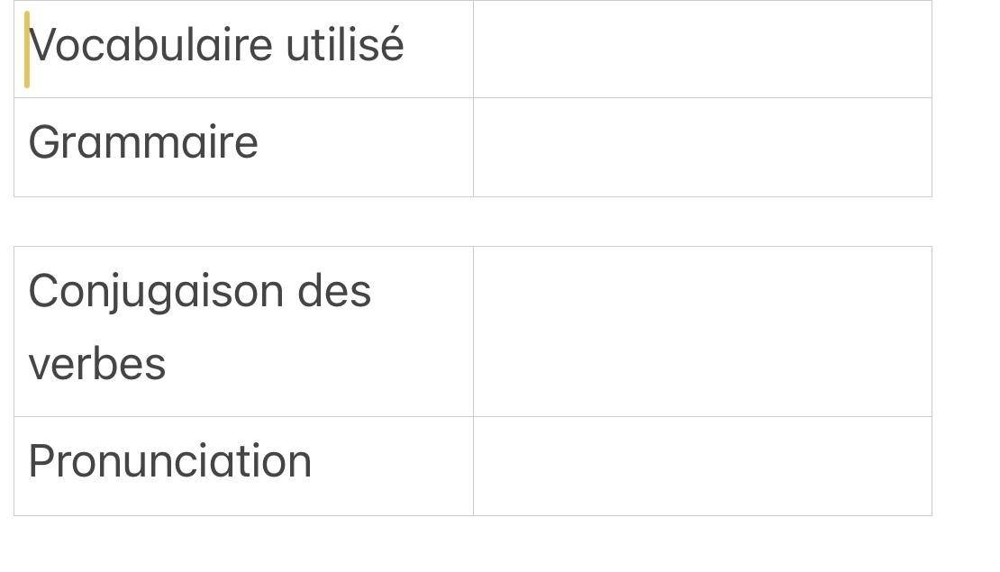
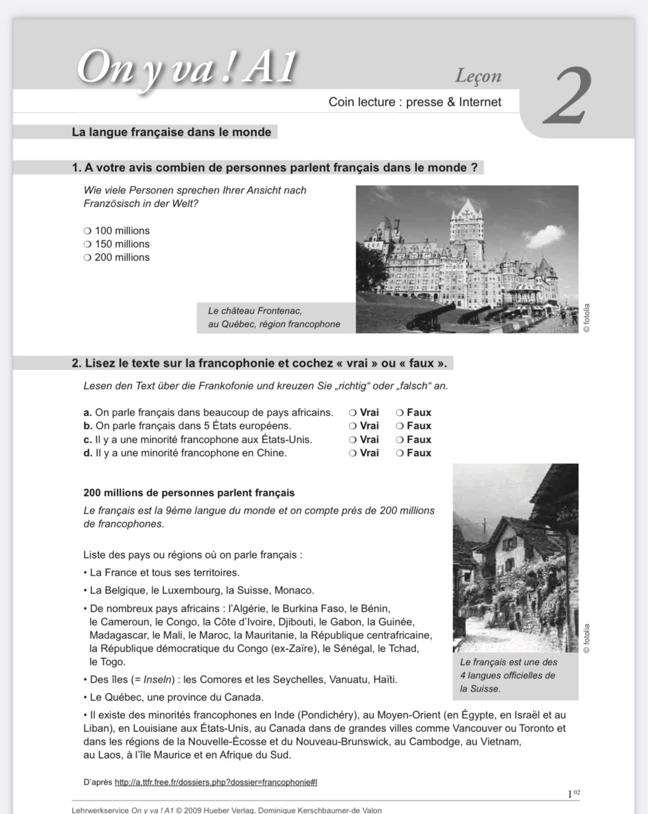
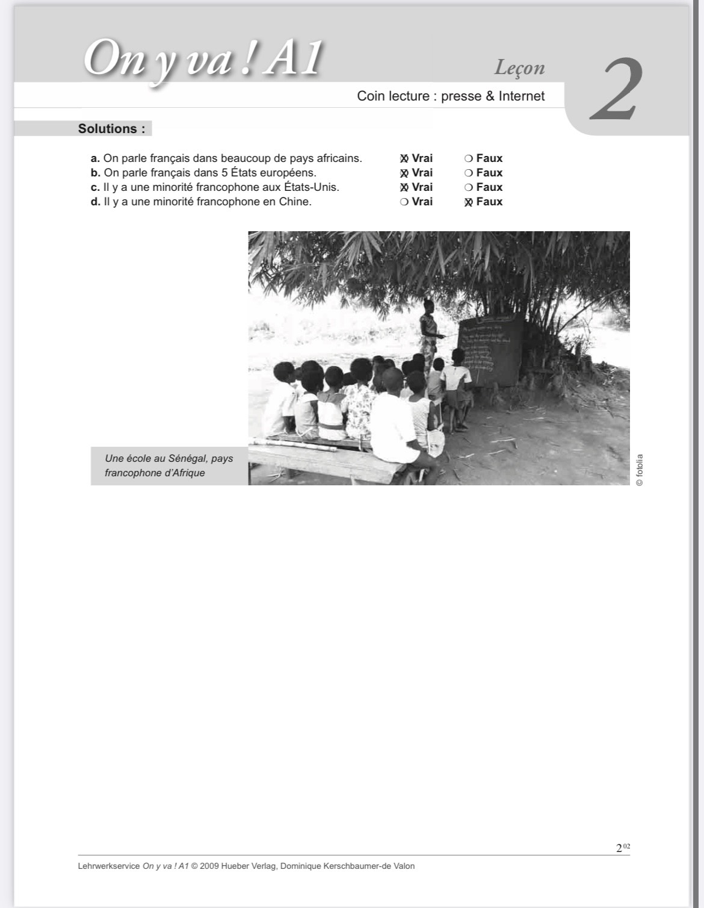
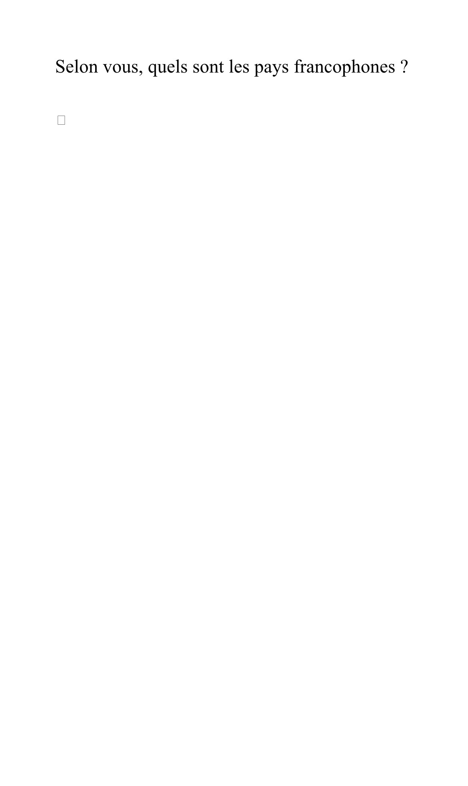
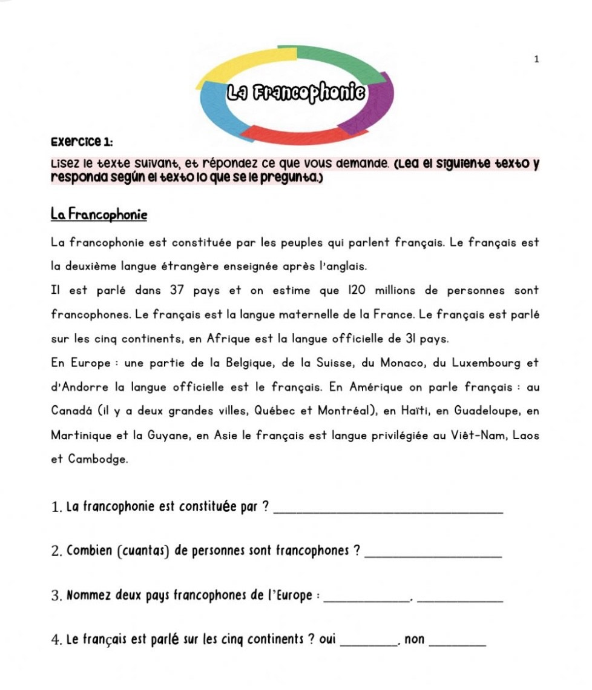
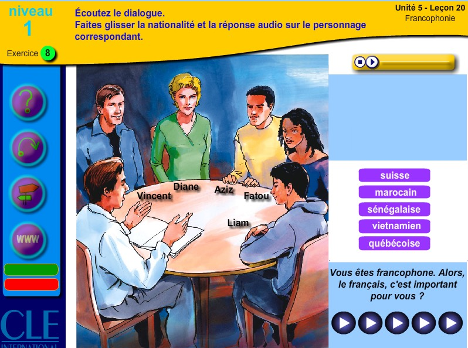
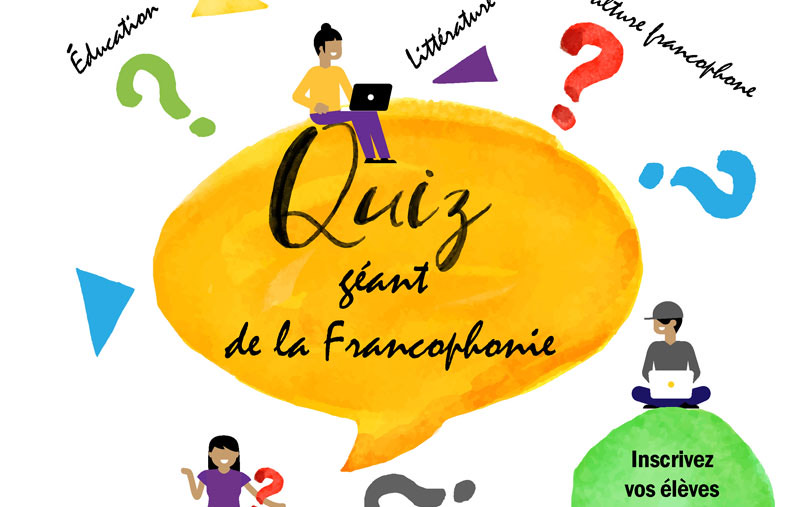

Le thème de la francophonie que j’ai choisi est un thème assez vaste , il est bien élaboré et travaillé en classe dans plusieurs activités pour donner et enrichir les élèves culturellement et motiver leurs connaissances sur la langue française
Pour commencer , il s’agit d’une activité faite au élèves en tant que projet d’examen chaque élève doit choisir un pays francophone et parler de ses traditions , cultures et civilisations et le présenter oralement de manière qu’il parle pour renforcer la prononciation, la professeure et moi après ont a posé des questions pour évaluer leur compréhension Tableau de évaluation :
Cette activité est faite en classe avec la professeure, dans un premier temps j’ai mis le texte pour eux deux fois en expliquant quelques termes et pour plus d’ambiance en travail j’ai choisi une chanson française de Patrick Bruel “au café des délices » dont il parle sur la Tunisie , et pour mélanger avec les épices de ma culture et renforcer la phonétique
 Dans cette activité avec 3ESO ont à essayé de faire un rafraîchissement pour eux alors j’ai distribué une feuille dont j’ai demandé de me citer les pays francophones qu’ils connaissait , c’est une petite activité de 15minutes et après le premier qui arrive à nous citer le maximum des activités gagnera un point plus dans les examens
Cette activité est faite en classe aussi ,chaque élève doit lire le texte ,pour corriger la prononciation et puis ils doivent répondre au questions du texte rapidement J ai insisté à les enrichir avec la compréhension pour qu’ils peuvent avoir plus de vocabulaire
Dans cette activité ont a voulu moi et la professeure de se concentrer sur l’oral et la prononciation, du coup ont a fait une projection en classe et les élèves doivent écouter le dialogue et glisser la nationalité et la réponse Audio sur le personnage correspondant
Lien du l’activité : MOddou FLE
J’ai pensé dans cette activité de faire un peu de divertissement pour les élèves , du coup j’ai fais une projection de quiz de KAHOOT! Pour eux et puis on a divisé la classe en groupe de quatre élèves et chaque groupe utilise un seule téléphone pour répondre aux questions , pour donner de l’énergie aux élèves à apprendre beaucoup plus sur la culture étrangère
Lien du l’activité : Kahoot!
Pour terminer le séjour culturel, nous avons décidé de mettre en place un jeu culturel sous forme de devinette intitulé "Quel pays suis-je ?". Chaque élève va être appelé au tableau et je vais chuchoter à son oreille le nom d'un pays francophone. L'élève devra alors donner des indices sur ce pays à ses camarades, tels que des informations sur sa culture, ses traditions, la couleur de son drapeau, ou encore des personnages ou artistes populaires. Les camarades devront deviner quel pays est en question. Cette activité vise à renforcer les connaissances des élèves sur les différents pays francophones de manière interactive et ludique.
Et pour conclure mon projet final que je peux le nommer un séjour culturel très riche de la langue de Molière et François le 1er Je remercie énormément auxmadrid et le programme de ALF de m’avoir donner cette position dont je suis une ambassadrice et représentante à la langue française à ma façon , avec les épices de ma culture tunisienne , avec ma professeure référante j’ai pu enrichir les élèves culturellement et élargir leur capacité pour la langue française, les pousser d’en savoir plus à travers de ce thème qui est mon existence principale pour dévoiler et planter le décor sur ma culture francophone